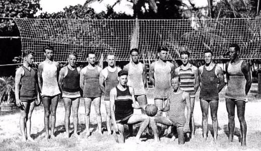
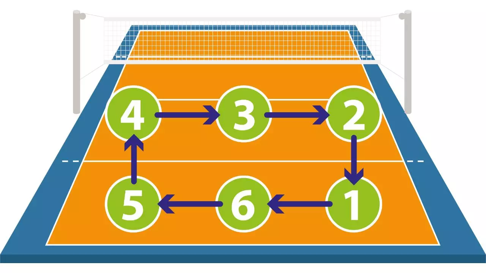

Odbojka
Odbojka je sport s loptom u kojem se dvije suparničke momčadi natječu na terenu s razapetom mrežom na sredini.
Cilj igre je prebaciti loptu preko mreže u protivničko polje na način da je protivnik ne uspije održati u zraku i vratiti natrag preko mreže na dozvoljen način prije nego što padne na teren.
Odbojka je sport koji obiluje brzinom i svestranim pokretima tijela pa se od igrača očekuju brze reakcije, sabranost i trenutna snalažljivost.
Glavna obilježja današnjih nacionalnih selekcija su snaga i visina. Osobito je važno da igrači budu dobro zagrijani i dobro istrenirani.

William G. Morgan (1870. – 1942.), rođen u državi New York ostao je zapisan u povijesti kao stvoritelj odbojke, koju je originalno nazvao "Mintonette".
Morgan je diplomirao na Springfield College-u gdje je upoznao James Naismith-a, koji je 1891. godine izmislio košarku.
Godinu dana nakon što je diplomirao, Morgan odlazi na Holyoke (Massachusetts), gdje dobiva mjesto direktora tjelesnog odgoja.
Početkom 1896. godine u Springfieldu na YMCA College-u organizirana je konferencija gdje su se okupili svi direktori tjelesnog odgoja YMCA-a.
Na toj konferenciji je Morgan prvi puta demonstrirao novo stvorenu igru. Složio je dvije ekipe od po pet igrača koji su prije same konferencije odigrali "Mintonette".

Godine 2000. donesena su nova pravila bodovanja u odbojci. Prema novim pravilima bodovi se osvajaju poslije svake završene akcije, bez obzira na to koja ekipa je servirala. Prema prijašnjim pravilima samo ona ekipa koja je servirala je mogla osvojiti bod.
Utakmice se igraju na tri dobivena seta od po 25 poena, a najviše se može odigrati pet setova. Za razliku od prva četiri seta, peti (koji se još zove i tie-break) se igra do 15 bodova.
U slučaju izjednačenog rezultata krajem seta, pobjedniku su potrebna dva poena razlike da bi završio susret u svoju korist.

Tijekom igre svih šest igrača se u polju rotiraju u smjeru kazaljke na satu, nakon osvojenog servisa.
To je glavni ključ dvoranske odbojke - ne može se cijelo vrijeme igrati s najboljim napadačima na mreži ili najboljim obrambenim igračima u pozadini.
Prije servisa igrači moraju biti na mjestima koje im redom pripada, a nakon servisa mogu zamijeniti mjesta, ali igrači iz obrane ne smiju mijenjati igrače na mreži.
Oni također smiju sudjelovati u napadu, ali mogu smečirati samo iza napadačke linije (linije tri metra). Pravilo rotiranja objašnjava zašto tehničar ponekad izgleda kao da se "skriva" iza igrača. Prije servisa, kao i ostali, i on mora biti na svom mjestu, a nakon servisa može trčati na mrežu kako bi organizirao napad.
Ako dotrči na mrežu prije nego što je protivnik odservirao, bod se daje protivniku.